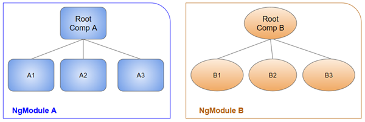

For a full documentation about Angular, please click here
1. Architecture
1.1 Overview
-
1.1.1 NgModules
The main building blocks of an Angular project are NgModules. NgModules collects related code in functional blocks, it is a container for cohesive block of codes, a workflow, ... . A Module can contain Components, service providers and other code files. A Module can export his own functionality for others to use and can import other modules for their functionality.
An App always has at least one root module the enables bootstrap. The root module always has a root component, but can have more additional components, which can be loaded through te router. Components in a module share a compilation context.
Image 1: A module with his components in their compilation context
A component and its HTML-template define a view. A view hierarchy can mix views defined in components of other modules

Image 2: A view hierarchy
-
1.1.2 Components
Components define views. Set of screen elements that can be renderend on behalf of your programs logic and data. A component can render and change the DOM (Document Object Model). You can decorate a class with @Component. It is not a compnent untill you defined it with the @Component
You define a view with its HTML template. The template will tell Angular how to render the page.

Image 3: A component with its sub-components
Some angular syntax
- *ngFor - to loop over a list
- curly brackets, (click), and [] bind program data to and from the DOM, responding to user input.
- a component tag in the example is an element that represents a new component, HeroDetailComponent. The HeroDetailComponent (code not shown) is a child component of the HeroListComponent that defines the Hero-detail view. Notice how custom components like this mix seamlessly with native HTML in the same layouts.
- 1.1.3 Services
Data binding
For manipulating data in the DOM, Angular supports one-way-bind and two-way-binding. No need for more explantion, just look at the image beneath.

Image 4: Databinding
Services provide functionality that a view does not need to know. Services are injected into Components as dependencies. While a component just need to have data, it does not need to know where to fetch the data. This is why services are made.
Dependency injectionComponents consumes services. You can inject services into components. You can do this through the @Injectable on a class. In the constructor of the component you can pass you service and the angular framework will inject this for you. constructor(private service: HeroService). If you injector already has a instance of that service, it will inject that instance, otherwise it will create a new instance.

Image 5: This is an overview how everything in Angular connects